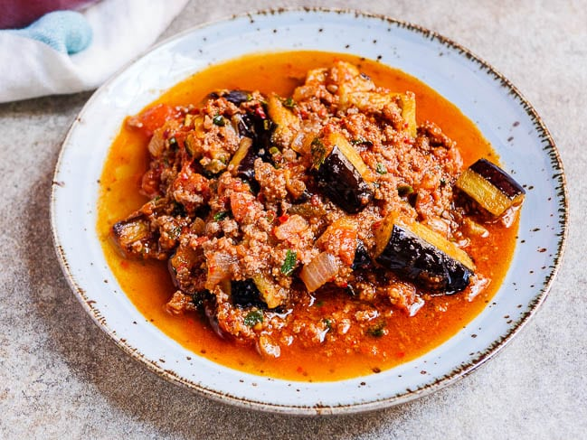

Musakka

Tarif
Malzemeler
- 4 adet orta boy patlıcan.
- 350g kıyma
- 3 adet çarliston biber ya da köy biberi
- 2 adet domates
- 1 adet orta boy soğan
- 1 su bardağı sıcak su
- 2 diş sarımsak
- 3 yemek kaşığı zeytinyağı
- Tuz, karabiber, pul biber, kimyon
- 1 yemek kaşığı salça
- 1 çay bardağı sıcak su
Adımlar
- Patlıcanların uç kısımlarını aldıktan sonra kabuklarını alacalı şekilde soyun.Halka halka kestiğiniz patlıcanları, acısının çıkması için bol tuzlu suda bekletin.
- Sıvıyağını tavada kızdırın ve yemeklik doğradığınız soğanları üzerine ekleyip pembeleşinceye kadar kavurun.Üzerine biberi ilave edip kavurmaya devam edin.
- Kıymayı, salçayı, tuzu, karabiberi ve kimyonu da ekleyip pişirmeye devam edin.
- Küp doğradığınız domatesleri de ekleyip pişirmeye bırakın. Domatesler piştikten sonra ocaktan alın.
- Patlıcanları kızartmak için ayçiçek yağını geniş tabanlı bir tavada kızdırın. Acısının çıkması için tuzlu suda bekleyen patlıcanların suyunu süzdürün. Salata kurutucusu ya da kağıt havlu yardımıyla patlıcanları kuruladıktan sonra kızgın yağda arkalı önlü ters çevirerek kızartın.
- Altın rengini alan patlıcanları kızgın yağdan çıkarın ve ayrı bir tencereye dizin.
- Üzerine hazırladığınız kıymalı harcı da ekledikten
- Sonra 1 su bardağı su ilave edip 15 dakika pişirmeye bırakın.
- Sıcak olarak servis edin.